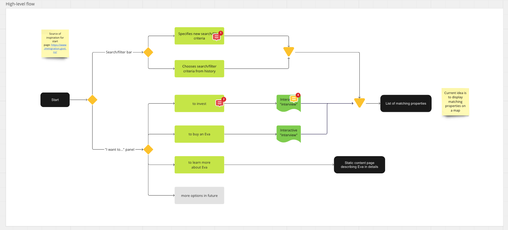
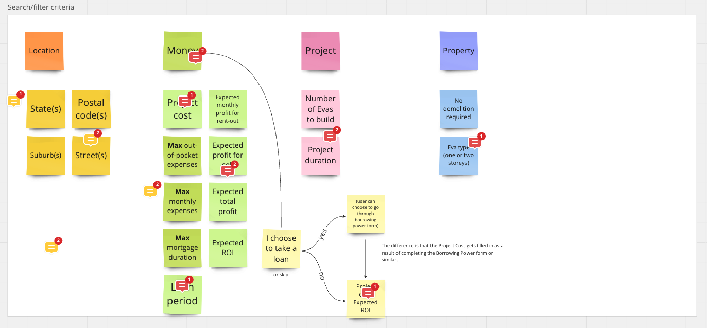
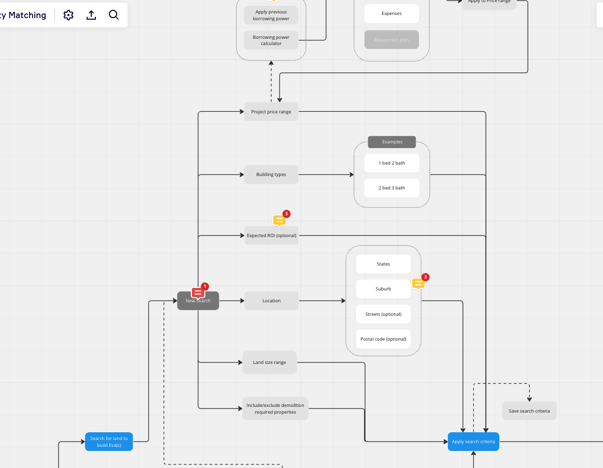
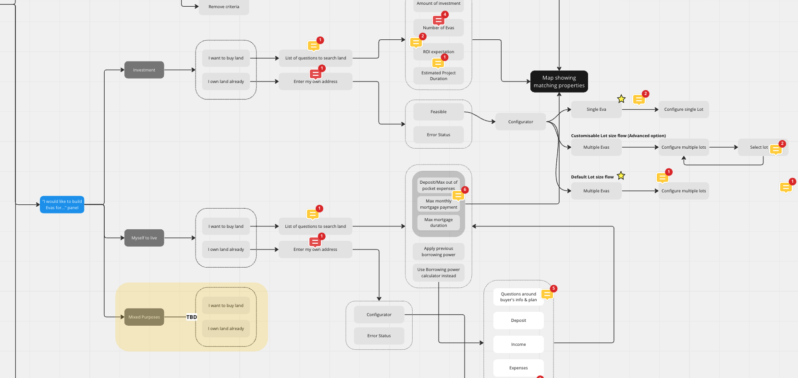
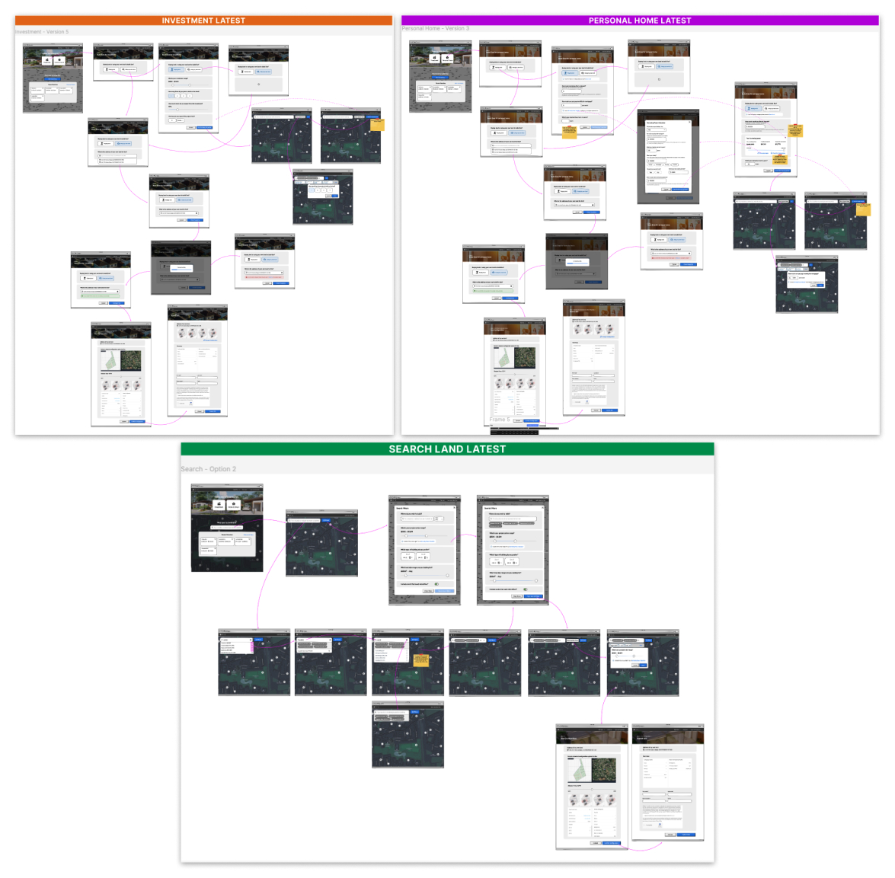
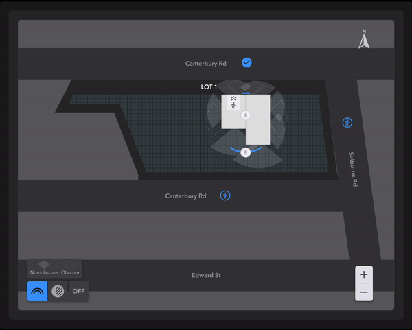

The challenge is to design an intuitive and user-friendly urban planning tool, called Rise, specifically tailored for Eva, a prebuilt smart home. The goal is to provide urban planners, as well as normal users seeking to place an Eva for personal use, with a seamless experience in understanding the concept of Eva and the value it brings. The tool should enable users to easily configure their development plans up to the Expression of Interest (EOI) stage.
The successful design of Rise will empower users to effortlessly explore and plan the placement of Eva homes, whether for investment purposes or personal use, ultimately contributing to the growth and success of the Eva ecosystem.
I collaborated closely with a diverse team of experts, including software engineers and a machine learning engineer, to refine the userflow for Eva development opportunities. Together, we aimed to create a seamless experience that catered to different user paths and requirements.
The userflow we developed provided two main paths for users. The first path focused on a search flow, empowering users to explore available Eva development opportunities. They could leverage various filters, such as project price range, ROI, and land size requirements for demolition, to refine their search. This path suited users who had a clear idea and wanted to explore options.

The second path took a purpose-based approach. Users began by defining the purpose of their development project and setting specific criteria, such as residential or mixed-use purposes, budget constraints, and desired ROI targets. The userflow then matched their preferences with suitable opportunities, ensuring a tailored search experience.

As the next step in our design process, we expanded the initial userflow, clarifying the required user interactions and creating a comprehensive journey for users. Through iteration and refinement, we achieved an intuitive user journey that facilitates smooth navigation and decision-making throughout the Eva development process.
 Following the userflow mapping, I proceeded to create low-fidelity mockups to visualize the earlier defined userflow. These mockups sparked further discussions and conversations among stakeholders. As part of this process, I iteratively modified the design and clarified user interactions to ensure alignment and agreement among stakeholders regarding the desired user experience. 
After finalizing the low-fidelity mockups, I took the lead in creating high-fidelity designs that aligned with Wallace's brand theme, characterized by a dark and futuristic aesthetic. During this phase, I collaborated with a contract designer, delegating tasks to him for developing designs based on the agreed-upon low-fidelity mockups.
To ensure a cohesive outcome, we maintained regular sync-ups, allowing us to align our designs and discuss potential solutions together. This collaborative approach fostered a cohesive visual direction for the new Rise platform, ensuring consistency and a seamless user experience throughout the design process.
The Plot Configurator, a key feature of the Rise platform, allows users to customize their Eva development plans with precision. It offers the ability to select different viewing perspectives within the Eva, including non-obscure and obscure views for privacy. Users can also adjust parameters such as shadow, entrance location, placement within the feasible region, and rotation of the Eva. This interactive tool empowers users to make informed design decisions based on their preferences and requirements. As a designer, I played a crucial role in visualizing and refining these customization options, ensuring a seamless and intuitive user experience. Below is a demonstration of the plot configurator in action, showcasing its impressive capabilities. 
The Plot Configurator also allows users to subdivide land and configure individual lots, providing flexibility and customization options. The image below demonstrates its functionality.

I am proud to showcase my achievements throughout the project. From the initial stages, I actively engaged in userflow mapping with stakeholders, ensuring a thorough understanding of their needs and expectations. Additionally, I successfully led the team towards a cohesive design direction that aligned with project goals.
Overall, my involvement in userflow mapping, managing stakeholders, and driving the design direction, combined with my work on interactive features, exemplifies my ability to deliver successful outcomes and make significant contributions to projects in the field of urban planning.